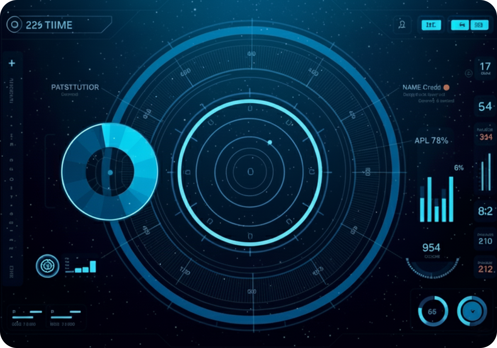
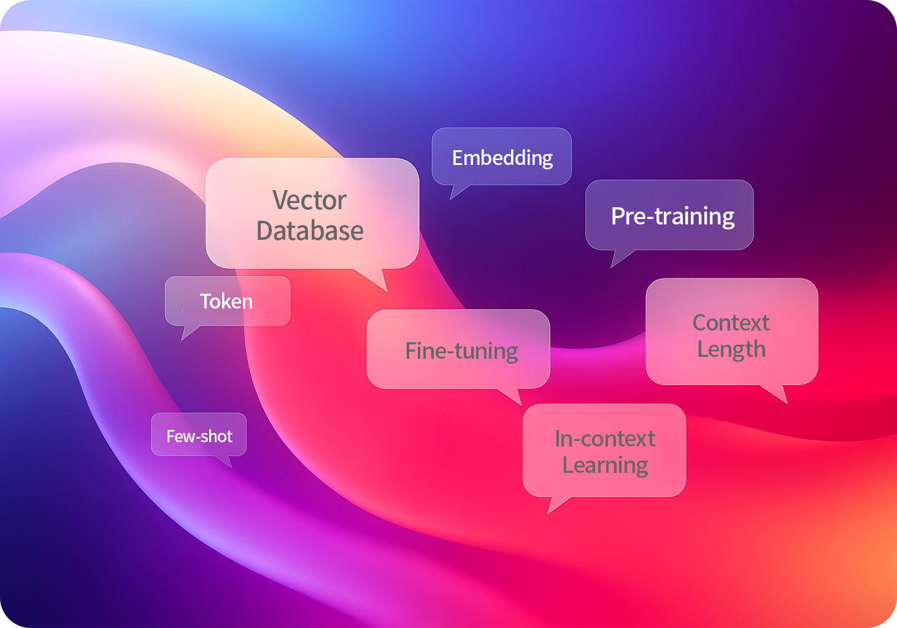

최첨단 언어 모델을 통해 차세대 AI 기술의 강력한 성능을 경험하세요.
비즈니스 자동화부터 창의적 글쓰기까지, AURABUS LLM은 모든 분야에서
뛰어난 성능과 탁월한 신뢰성, 정밀도를 제공합니다.
AURABUS LLM은 최신 AI 기술을 기반으로 다양한 업무와 창작 활동을 지원하는 강력하고 신뢰할 수 있는 언어 모델로, 뛰어난 성능과 안정성을 제공합니다.
자연스러운 언어 대화를 통해 복잡한 질문에도 정확하고 상세한 답변을 제공합니다.
다양한 프로그래밍 언어에서 코드 생성, 디버깅, 최적화를 지원하여 개발 효율성을 높입니다.
빠른 응답 속도와 안정적인 서비스로 언제나 신뢰할 수 있는 AI 파트너입니다.
긴 문서나 복잡한 내용을 명확하고 이해하기 쉽게 요약하며, 핵심 포인트만 추출합니다.
첨단 언어 모델을 활용하여 정확한 분석과 가치 있는 인사이트를 제공합니다.
창의적이고 자연스러운 텍스트 생성을 통해 다양한 콘텐츠 제작을 지원합니다.
정확한 데이터 분석을 통해 논리적이고 신뢰할 수 있는 추론 결과를 제공합니다.
혁신적인 접근으로 복잡한 문제에 대한 창의적인 솔루션을 제시합니다.
세 가지 전문 역량을 소개합니다.


AURABUS LLM이 제공하는 다양한 AI 서비스를 통해 비즈니스 혁신을 경험하세요.
첨단 자연어 처리 기술을 통해 인간과 유사한 자연스러운 대화를 가능하게 하며, 복잡한 질문에도 정확하고 상세한 답변을 제공합니다.
반복적인 업무를 자동화하여 업무 효율을 극대화하고, 인력이 보다 창의적인 업무에 집중할 수 있도록 지원합니다.
최신 대화형 AI 기술을 기반으로 사용자의 의도를 정확히 파악하고, 개인 맞춤형 서비스를 제공합니다.
고객의 특수 요구에 최적화된 AI 모델을 제공하며, 지속적인 업데이트와 개선을 통해 최고의 성능을 보장합니다.